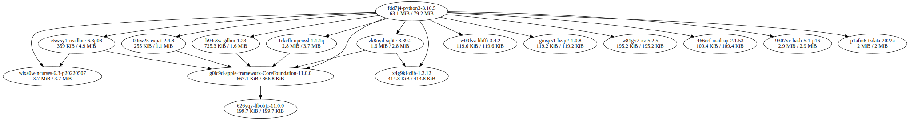

Debugging closure sizes graphically
Jade Lovelace <jadel@mercury.com>
NixCon 2022
October 20, 2022
https://jade.fyi
# who am I? * Computer Engineering student at UBC in Vancouver, BC, Canada * Presently interning in backend dev for Mercury, a company offering banking<fnref>1</fnref> designed for the unique needs of startups * Haskell + TypeScript + Nix stack * Working on internal tools for risk management <div class="footnotes"> <ol> <li>Mercury is a financial technology company, not a bank. Banking services provided by Choice Financial Group and Evolve Bank & Trust, Members FDIC.</li> </ol> </div>
# what's closure size? * Size of some derivation and everything it depends on * Accidental dependencies are the major contributor * Other systems don't have this problem: forgetting about runtime dependencies may silently fail (or work if you have them installed!) at runtime * "Closure" → like a function referencing values outside it
# how do I create a dependency? * Only what goes in may go out: inputs may become runtime dependencies if they appear in the output * Follows from Nix's hermetic design: outputs are a strict subset of inputs * It's easy to cause accidental dependencies
# ok, but what does "appear" mean? ``` grep -r '[0-9abcdfghijklmnpqrsvwxyz]{32}' $out ``` Seriously. Nix looks for 32 character strings forming the hash part of any of the store paths of the closure of the inputs to the derivation See Figure 5.12 in the Nix thesis
# digression: "what went in?" Nix strings are magic: they keep track of the derivations that they've referenced as "string context", and propagate that information into any derivations they land in.
# what does my stuff depend on? <pre><code class="text"><script type="text/template">~ » nix path-info -rsSh nixpkgs#hello /nix/store/c8aj6kzv5h7c5vympiy7l1p3aw626yqy-libobjc-11.0.0 199.7K 199.7K /nix/store/y5cp9q9h6p80mzbsijs00zxpi7g0lc9d-apple-framework-CoreFoundation-11.0.0 667.1K 866.8K /nix/store/xbqj64vdr3z13nlf8cvl1lf5lxa16mha-hello-2.12.1 126.9K 993.7K </script></code></pre>
# that's a graph though Yeah. I can't tell what the relationship is between these. No tree or graph mode for nix path-info unlike nix-store --query (the latter is not stellar anyway)
# what if..? haha, jk, unless? There is a JSON output mode, what if we just used that? and then did some stuff to it Some purely functional programming in jq later: `nix-closure-graph nixpkgs#python3 > python3Closure.svg`
# cool <div class="img-container">  </div>
# what about a nixos image whoops <div class="img-container"> <img src="./img/nixosClosure.svg" style="object-fit: cover; object-position: center;" width="100%" height="100%" alt="incomprehensible graphviz graph absolutely covered in lines for a nixos image"> </div>
# well that didn't work I built this graph viewer prototype at work, I wonder if I could stick a NixOS closure into it FIXME!!!
# other projects from me https://docs.jade.fyi - Single page HTML docs for GNU, postgres, and zsh https://github.com/LF-/nix-doc - Interactive function documentation for Nix https://github.com/LF-/nix-otel - Trace Nix builds with OpenTelemetry
# Mercury is hiring! Front-end, back-end, management, design, data https://mercury.com/jobs